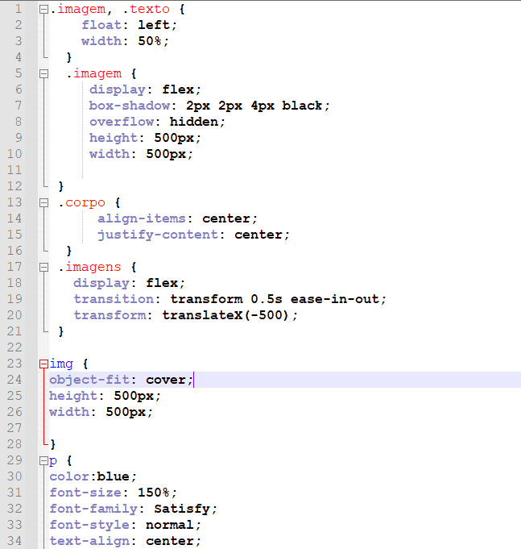

CSS incorporado
1. No Notepad++ crie um novo arquivo com o nome
estilos.js
2. Copie todo o conteúdo que está entre as tags
styles /style e cole neste novo arquivo
3. Verique se o arquivo contem todos os estilos da imagem abaixo.
